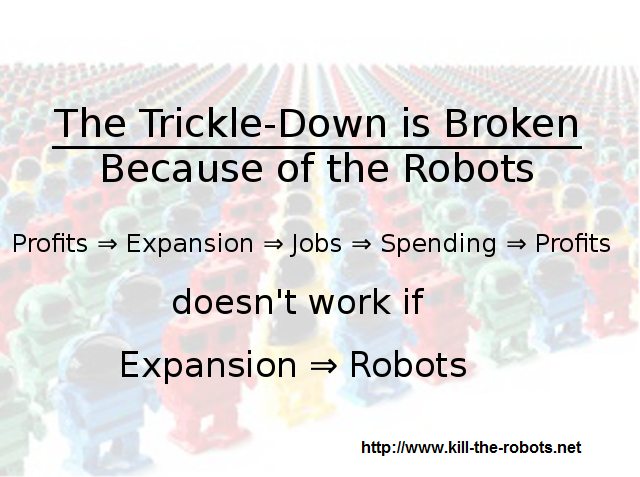

[[ turn 'em off ]]
robots don't need jobs! turn them off so humans can work
(well, some of 'em)
(Took 'r' jobs...)
The trickle-down economy only works when profits → expansion → jobs → spending → profits.
-->
Robots are super cool, but they are slowly but surely taking all the jobs. Turn 'em off, it's ash cash. There is almost nothing a robot can't do.
